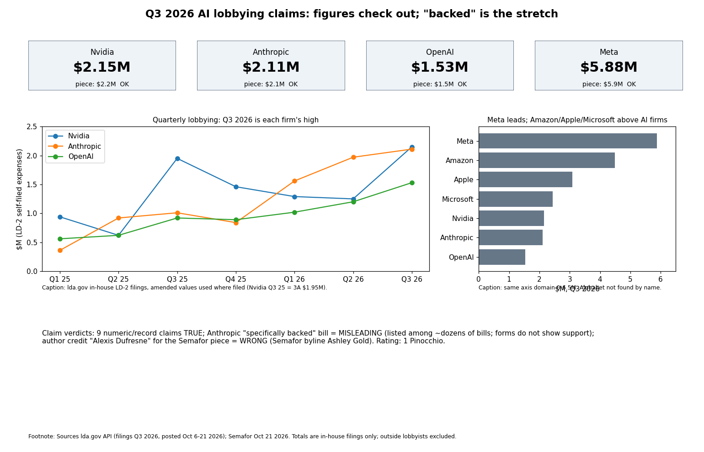

The piece is accurate on every figure: 1 Pinocchio overall. Senate LDA filings show Q3 2026 in-house lobbying expenses of $2.15M (Nvidia), $2.11M (Anthropic), $1.53M (OpenAI) and $5.88M (Meta), each matching the rounded claim, and each AI firm's figure is its highest in the 2025-26 quarters checked.
| Claim | Verdict | Evidence |
|---|---|---|
| Nvidia Q3 2026 lobbying $2.2M, a record | True | LD-2 self-filed $2,150,000; prior high $1.95M (Q3 2025 amended); 2025-26 series |
| Anthropic $2.1M, a record | True | $2,110,000; prior high $1,970,000 (Q2 2026) |
| OpenAI $1.5M, a record | True | $1,530,000; prior high $1,200,000 (Q2 2026) |
| Meta led Big Tech at $5.9M | True | $5,880,000; next Amazon $4.49M, Apple $3.09M, Microsoft $2.44M (Alphabet not located) |
| OpenAI lists AI-security info-sharing with antitrust protections | True | OpenAI Q3 filing text: 'AI-security collaboration and information-sharing, including proposed antitrust protections' |
| Anthropic cited the Collaboration on Adversarial Threats and Security Risks Act | True as listing | S.5105 appears in Anthropic's Q3 filing |
| Anthropic 'specifically backed' that bill | Misleading | It is one of many bills in the filing; LD-2 forms do not show support or opposition (Semafor says so itself) |
| Semafor report by Alexis Dufresne, Oct 22 | Wrong attribution | Semafor article is by Ashley Gold, Oct 21; Dufresne is the AI Weekly author |
| Headline: 'Antitrust talks begin' | Overstated | Filings show lobbying on a topic, not negotiations |
Confidence: high on figures (primary), medium on the "backed" judgment.